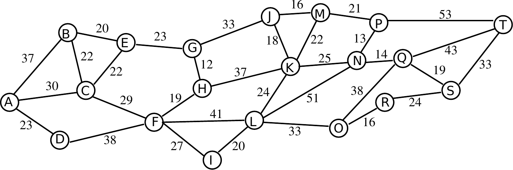

L’algorithme du plus court chemin de Dijkstra¶
Activité collaborative et débranchée pour introduire l’algorithme du plus court de chemin de Dijkstra en partant d’une exemple de la vie quotidienne
L’algorithme du plus court chemin de Dijkstra
Thème : Algorithmique 2 (graphes)
Niveau :
facileDurée : 2 période ou 90 minutes
Objectifs pédagogiques : Découvrir et comprendre l’algorithme de Dijkstra
Notions fondamentales: longueur de chemin dans un graphe
Modalité :
débranchéMatériel : Un
graphe découpé en morceaux(chaque morceaux contient un noeud et tous ses voisins), 3feuilles de zones, desfiches(une par noeud) du scotch pour accrocher des feuille aux murs de la classe (ou un système d’aimants, des punaise, selon le type de surface disponible)Prérequis : aucun
Taille du groupe :
demi-classe(mais peut être éventuellement testée en classe entière)Dynamique (groupe / individuel) : activité coopérative
Déroulement¶
Etape |
Durée |
Phase |
|---|---|---|
Mise en situation générale autour des services de navigation |
5 min |
Mise en situation |
Mise en situation spécifique pour passer à un niveau d’abstraction et de généralisation plus élévé. |
15 min |
Objectivation et mise en situation |
Identification , identification de l’objectif, explication de la non-trivialité du problème. |
5 min |
Formalisation |
Découverte par essais-erreurs de l’algorithme et de sa justification par simulation humaine. |
20 min |
Exploration |
10 min |
Institutionnalisation - Objectivation |
|
Exemples d’utilisation de l’algorithme et exercices. |
15 min |
Application |
Modélisation pour d’autre contextes |
10 min |
Réinvestissement |
Mise en situation générale¶
Durée : 5 min
L’enseignant va sur une page de navigation (p.ex OpenStreetMap) et montre un exemple de requête de chemin pour relier deux points.
Comment le site web a-t-il déterminé le chemin qu’il nous indique ?
Quelles données a-t-il à sa disposition pour déterminer ce chemin ?
Tout le réseau routier est représenté sous forme d’un graphe.
Les croisements et embranchements sont représentés par les sommets du graphe et les routes qui les relient sont représentées par les arêtes du graphe.
Mise en situation spécifique¶
Durée : 15 min
Exemple 1¶
L’enseignant distribue à chaque élève un graphe suffisamment compliqué dans lequels la longueur des arêtes est indiquée. Ils doivent trouver, individuellement, le plus court chemin reliant deux points. Eventuellement, le graphe peut être tel qu’il y a plusieurs plus courts chemins.

Mise en commun
Qui a trouvé le plus court chemin ?
Etes-vous sûr qu’il s’agit du plus court chemin? Le cas échéant, comment le savez-vous ?
Chacun donne son plus court chemin.
Y a-t-il des chemins plus courts que ça ?
Exemple 2¶
Dans un voyage en voiture, on ne veut pas forcément le plus court chemin, mais souvent le plus rapide.
Par exemple, on va prendre l’autoroute de contournement de Lausanne qui est plus longue, mais plus rapide que de traverser la ville.
On retrouve le même graphe qu’avant, mais cette fois on a le temps de parcours entre chaque point qui est indiqué et on ne peut plus se baser sur les aspects géométriques pour trouver le plus courts chemin.

Mise en commun
Qui a trouvé le plus court chemin ?
Etes-vous sûr qu’il s’agit du plus court chemin? Le cas échéant, comment le savez-vous ?
Chacun-e donne son plus court chemin.
Y a-t-il des chemins plus courts que ça ?
Que faut-il faire pour être sûr-e que ce soit vraiment le plus court ?
Identification du problème¶
Durée : 5 min
Le problème est donc donné sous forme d’un graphe constitué de sommets reliés par des arêtes qui ont une certaine longueur. Dans le cas ci-desssus, les sommets représentent des villes, les arêtes les routes, et les longueurs la durée du trajet. La longueur totale est donnée par la somme des longueurs des arêtes empruntées.
Découverte¶
Durée : 20 min
🎲 Activité
Pour déterminer le plus court chemin dans ce graphe, la classe va le faire tous ensemble. Chaque élève représente un sommet et reçoit le sous-graphe constitué de son sommet et ses voisins directs (autrement dit une liste de ses voisins et les distances correspondantes) ainsi qu’une fiche sur laquelle il note le nom de son sommet. Chaque élève prend en outre un crayon ou un stylo. Cette activité demande un peu de doigté de la part de l’enseignant-e pour que les élèves réalisent bien ce qu’il se passe. Au besoin, il faut adapter le graphe au nombre d’élèves prévu.
Déroulement
L’enseignant délimite la classe en trois zones et affiche les instructions correspondantes:
La zone rouge, contenant les sommets qui ont trouvé la longueur du chemin le plus court depuis le sommet de départ.
La zone verte, contenant les sommets qui ont trouvé une longueur de chemin depuis le sommet de départ, mais pas forcément la plus petite.
La zone blanche, contenant les sommets qui n’ont pas trouvé de longueur depuis le sommet de départ.
Les instructions pour les élèves sont les suivantes:
Tous les élèves commencent dans la zone blanche.
Lorsqu’une élève se rend compte qu’elle peut calculer la longueur d’un chemin depuis le sommet de départ, elle écrit sur sa feuille par quel voisin ce chemin passe ainsi que la distance correspondante, et se place dans la zone verte.
Les élèves de la zone B peuvent se voir mutuellement leur feuille
Lorsqu’une élève de la zone verte se rend compte qu’il existe un chemin plus court que la longueur indiquée sur sa feuille, elle met sa feuille à jour.
Lorsqu’une élève se rend compte que le chemin indiqué sur sa feuille est le plus court, elle passe dans la zone rouge.
Dans la zone rouge, toutes les feuilles sont clairement visibles de tous le monde.
Si tout se passe bien, les élèves vont se déplacer dans la zones verte puis dans la zone rouge en commençant par le sommet de départ. Idéalement, elles doivent se rendre compte des principes de base de l’alogrithme de Dijkstra:
Si un de leur voisin direct a trouvé une longueur de chemin, il ont également une longueur de chemin en ajoutant la distance qui les sépare.
Si un·e élève a le chemin de plus court de la zone B et que personne ne s’y ajoute (i.e. tous les voisin des personnes dans la zone A sont soit dans la zone rouge soit dans la zone verte), elle peut passer en **zone rouge **.
A la fin, en suivant les relations de voisinage, on peut reconstituer le chemin le plus court.
Attention
Au début, l’ordre des opérations a effectuer sera flou pour les élèves, mais après quelques itérations, une systématique devrait émerger (guidée par l’enseignant-e) dans l’ordre des mises à jour: dès qu’un sommet atteint la zone rouge, ses voisins de la zone blanches peuvent passer en zone verte, ses voisins de la zone verte peuvent se mettre à jour, puis celui avec la plus courte distance peut passer à son tour en zone rouge. Et on recommence…
Formalisation / Institutionnalisation¶
Durée : 15 min
L’enseignant-e formalise l’algorithme au tableau avec l’aide des élèves. Pour aider à la compréhension et à la représentation, on réutilise les couleurs pour dénommer les zones et ainsi pouvoir changer les sommets de zone en modifiant la couleur.
Formalisation
Mettre le sommet de départ S en rouge, sa distance au sommet de départ est 0.
Mettre en vert tous les sommets voisins de ce sommet S qui sont en blanc et indiquer en vert leur distance au sommet de départ en passant par ce sommet S et indiquer le chemin à ce sommet S par une flèche verte.
Vérifier tous les voisins de ce sommet S qui sont en vert si leur distance au sommet de départ est plus petite en passant par ce sommet. Si c’est le cas ajuster leur distance au sommet de départ et leur flèche pour qu’elle pointe vers le sommet S.
Prendre le sommet vert avec la plus petite dgiistance au sommet de départ et le mettre en rouge avec sa distance et sa flèche. Ce sommet est le nouveau sommet S.
Si ce sommet S est le sommet d’arrivée, le plus court chemin est obtenu en suivant les flèches, sinon retourner au point 2.
Exemples d’utilisation¶
Durée : 15 min
L’enseignant fait un exemple au tableau avec les élèves et leur propose ensuite d’essayer seuls ou par deux sur des graphes donnés. Une correction est en suite proposée.
Modélisation¶
Durée : 10 min
Ce jeu consiste à trouver une manière de relier deux mots ayant le même nombre de lettres (par exemple VERSE et LITRE) avec une série de mots existants dont chaque mot ne diffère du précédent que d’une seule lettre. Dans notre exemple, une solution est donnée par :
VERSE - VERRE - SERRE - SEVRE - LEVRE - LIVRE - LITRE
On suppose disposer d’une liste de tous les mots de la langue française.
Comment l’algorithme du plus cours chemin peut-il être utilisé pour trouver une solution à ce jeu ? En particulier, quel graphe serait-il nécessaire de construire, à quoi correspondrait ses nœuds et ses arêtes et ses distances ?
Selon le niveau atteint en programmation, une petite application proposant ce jeu et les solutions correspondantes pourrait être programmée par exemple en utilisant une libraire de graphe telle que igraph ou networkX en python.
L’autre jour, vous avez flashé sur quelqu’un que vous ne connaissez pas mais dont vous avez réussi à obtenir le nom. Après avoir passé beaucoup de temps sur son profil dans votre réseau social préféré, vous recevez une notification vous indiquant quel ami-e pourra sans doute vous aider à vous rapprocher de cette personne. Comme ce réseau social a-t-il pu utiliser l’algorithme de Dijkstra pour vous faire cette recommandation?